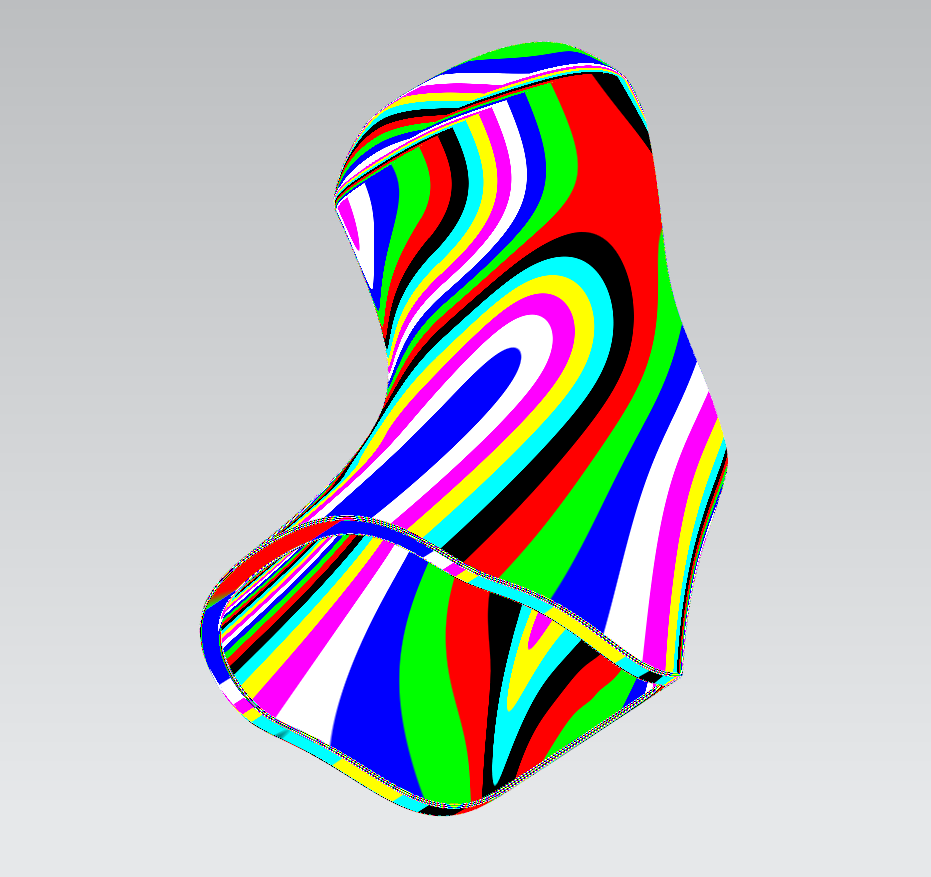
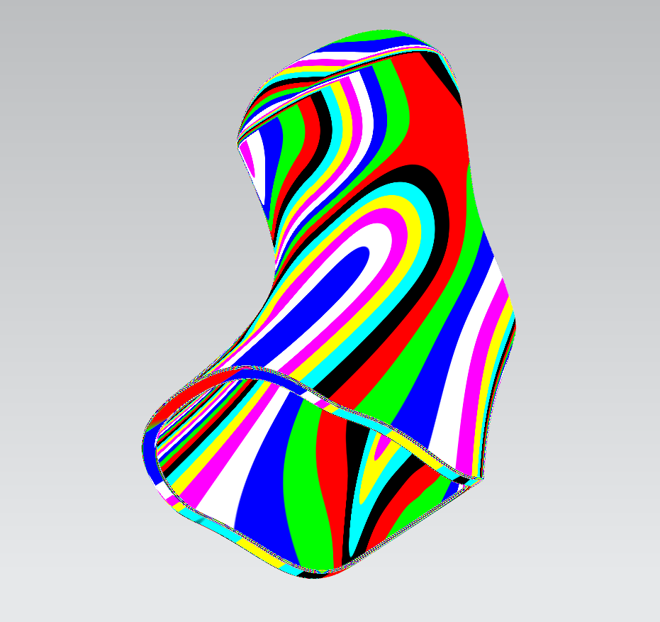

“ Al van jongs af aan ben ik gepassioneerd door vormen, mechanismen en elektronica. Aan de UGent studeer ik industrieel ontwerpen om die passie verder te zetten en tastbaarder te maken. Via deze webpagina toon ik graag een aantal afgewerkte projecten. Deze projecten zijn gebaseerd op een grondige theoretische kennis van o.a. wiskunde, fysica, elektriciteit, materialen, thermodynamica en productietechniekendie we vooral in het eerste jaar zagen. ”
CAD
Solid en surface modelling, analyses en maken en interpreteren van technische tekeningen. Hiervoor werd met Siemens NX gewerkt.
 


Productietechnieken
PLA en SLS 3D printen, spuitgieten, frezen, thermovormen, lasercutten... Deze zien we zowel theoretisch als praktisch waarbij we het stuk eerst in CAD tekenen, slicen en vervolgens naar de machine sturen.


Graphic design
Rendering, brochures en mock ups met VRed en Affinity designer, photo en publisher als software.


Programming
Arduino, python, html en css. Klik op de afbeeldingen om de projecten in detail te bekijken.


0495 40 83 28
Jeroen.Cieters@ugent.be